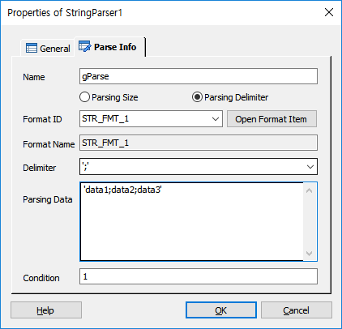

DefineString Item 에 정의된 파싱 포멧변수를 사용하여 문자열을 파싱하는 기능을 제공합니다.
ICON

PROPERTIES
 Packet Info
Packet Info

Name : 아이템의 이름을 지정 합니다. 지정된 이름은 파싱 변수에 접근 할 때 사용 합니다.
Parsing Size Radio Button : 문자열 파싱을 DefineString에 정의된 변수의 사이즈에 따라 파싱합니다.
Parsing Delimiter Radio Button : 문자열 파싱을 구분자의 의해 파싱합니다.
Format ID : DefineString Item으로 정의된 Format ID를 선택 합니다.(Parsing Delimiter 인 경우에 이 값이 지정되어 있으면 사이즈는 무시됩니다.)
Open Format Button : DefineString이 정의된 시나리오로(Global.ssfx) 이동합니다.
Format Name : DefineString에 설정된 Format Name을 표시 합니다.
Delimiter : 구분자의 의한 파싱 시 구분자를 지정합니다.
Parsing Data : 파싱 하고자 하는 문자열 또는 변수를 지정합니다.
Condition : 아이템의 수행 조건을 지정 합니다.
RESULT
· 처리 결과 세션 변수
session.command.result : 처리 성공(_SLEE_SUCCESS_), 실패(_SLEE_FAILED_)
session.command.reason : 실패면 실패 오류코드(시스템 상수 참조)
· 아이템 속성 변수(@name은 Name항목에서 지정한 이름)
@name.파싱변수명 : Format ID가 지정되어 있을 때 설정된 파싱 변수를 사용합니다.
@name.파싱변수명[XX] : Repeat 부분이 있는 경우 Repeat 항목을 접근 하기위한 방법, XX(Repeat 레코드 인덱스, 1 base)
@name.parsedata[XX] : Parsing Delimiter 이고 Format ID가 지정되어 있지 않은 경우 파싱 데이터는 배열변수로 제공됩니다.
@name.parsecount : 파싱된 데이터의 개수 입니다.(ForCus v5.1 이상 지원)
RELATED